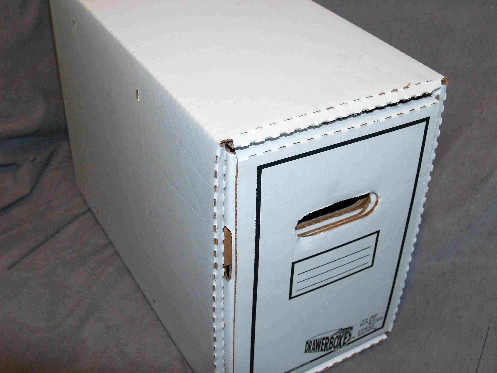
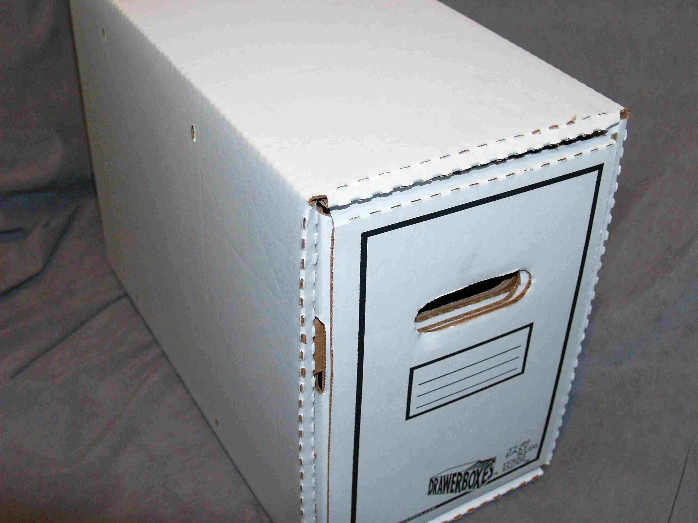

The final step in collecting are the boxes. Boxes serve two roles. The first is a
place to store your comics. The second is to protect your books. They come in a
variety of styles and sizes.
Learn
Long or short? Long boxes hold around 250 comics. The down side is they can be
very heavy. Short boxes hold about half that but are much lighter.
Original or drawer type? Original boxes comic with a removable top and are loaded
from the top. Drawer type look like exactly like a file cabinet drawer. They are meant
to be stacked about 5 boxes high.
Where find them? Both styles are found in local comic shops. The drawer types are
are not carried in as many stores and may it may be easier to get the online stores.
 
